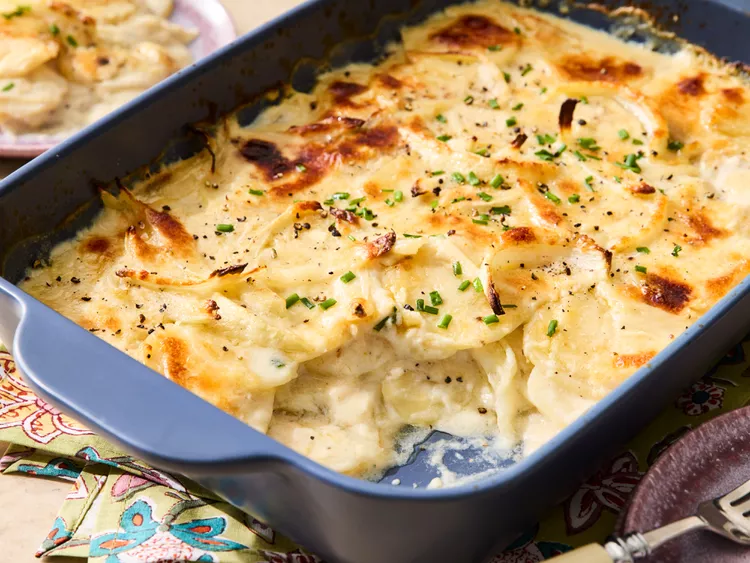

Scalloped Potato

Description
Scalloped potatoes are a classic comfort food dish made with thinly sliced potatoes baked in a creamy sauce, often
with cheese, butter, and milk or cream.
The dish is typically layered in a casserole dish and baked until the potatoes are tender and the top is golden and
bubbly. It's rich, savory, and perfect as a side for meats or holiday meals.
Ingredients
- Potatoes
- Heavy Cream
- Butter
- Cheese
Steps
- Preheat oven to 375°F (190°C).
- Prep the potatoes: Peel (if you like) and thinly slice the potatoes—about 1/8-inch thick. A mandoline slicer
helps for even slices.
- Make the sauce
In a saucepan, melt the butter over medium heat.
Stir in a bit of flour (about 2 tablespoons) to make a roux, and cook for 1–2 minutes.
Gradually whisk in the milk or cream until smooth and slightly thickened.
Season with salt, pepper, and any extras like garlic or thyme.
- Layer the potatoes:
In a greased baking dish, arrange a layer of potatoes.
Pour some of the sauce over the layer and sprinkle with cheese if using.
Repeat layers until all potatoes are used up, finishing with sauce and cheese on top.
- Bake
Cover with foil and bake for about 45 minutes.
Remove foil and bake another 20–30 minutes, until the top is golden and potatoes are tender when pierced with a
fork.
- Let rest: Let it sit for 5–10 minutes before serving so it sets a bit.